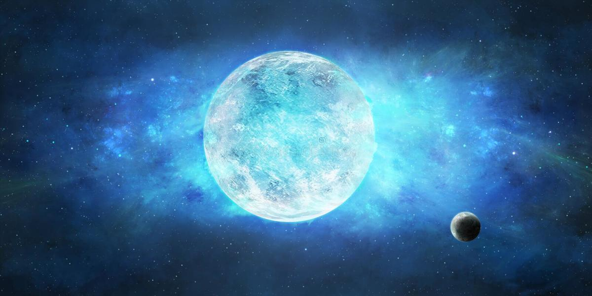
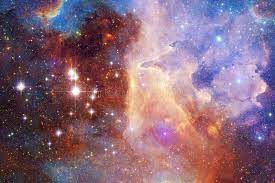
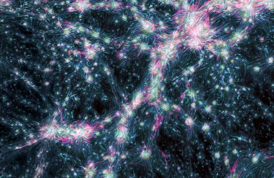

ESTRELLAS
AQUI HABLAREMOS DE LAS ESTRELLAS, LAS NEBULOSAS, LA RED COSMICA Y LA TEORIA DEL MULTIVERSO
ESTRELLA ENANA ROJA
Las enanas rojas son, hasta la fecha, el tipo más común de estrellas de la Vía Láctea,
por lo menos en la vecindad del Sol, pero debido a su baja luminosidad las enanas rojas individuales no pueden
ser observadas fácilmente. Desde la Tierra, ninguna es visible a simple vista. Próxima Centauri, la estrella más cercana al Sol,
es una enana roja de Tipo M5 y magnitud aparente 11.05, al igual que veinte de las treinta estrellas más cercanas. De acuerdo con
algunas estimaciones, las enanas rojas representan las tres cuartas partes de las estrellas en la Vía Láctea.
 |
ESTRELLA SUPERGIGANTE
Las estrellas supergigantes (supergiant stars en inglés) son estrellas con masas comprendidas entre 10 y 50 masas
solares y enormes dimensiones, que en el caso de las supergigantes rojas pueden ser del orden de 1000 veces la del Sol. Ocupan la parte
superior del diagrama de Hertzsprung-Russell. En la clasificación espectral de Yerkes son de clase de luminosidad Ia (las supergigantes
más luminosas), o Ib (las menos luminosas). Sus magnitudes absolutas bolométricas típicas van desde -5 a -12. Las supergigantes extremadamente
luminosas suelen clasificarse como hipergigantes (clase 0)
|
ESTRELLA SUPERMASIVA
para ello, debemos situarnos en el contexto de las estrellas supermasivas, que son aquellas que tienen entre 8 y 20
veces la masa del Sol. Son millones de veces más grandes que el Sol pero no suficientemente masivas para colapsar en una singularidad,
es decir, un agujero negro.
|
ESTRELLA SUPERNOVA
Una supernova (del latín super 'por encima' y nova, 'nueva') es una explosión estelar que puede manifestarse de forma
muy notable en el espacio, incluso a simple vista, en lugares de la esfera celeste donde antes no se había detectado nada en particular.
Por esta razón, a eventos de esta naturaleza se los llamó inicialmente stellae novae («estrellas nuevas») o simplemente novae. Con el tiempo
se hizo la distinción entre fenómenos aparentemente similares, pero de luminosidad intrínseca muy diferente; los menos luminosos continuaron
llamándose novae (novas), en tanto que el término supernova fue acuñado por Walter Baade y Fritz Zwicky en 1931 para denominar a los más
luminosos agregándoles el prefijo «super-».
 |
NEBULOSAS
Las nebulosas son regiones del medio interestelar constituidas por gases (principalmente hidrógeno y helio) además de
elementos químicos en forma de polvo cósmico. Tienen una importancia cosmológica notable porque muchas de ellas son los lugares donde
nacen las estrellas por fenómenos de condensación y agregación de la materia; en otras ocasiones se trata de los restos de estrellas ya
extintas o en extinción.
 |
RED COSMICA
La red cósmica, telaraña cósmica o web cósmica (del inglés, cosmic web) es el nombre dado por los astrónomos a toda
la estructura del universo, compuesta por filamentos galácticos interconectados (formando nodos o puntos de intersección), combinados
con vacíos entre ellos. Según los modelos de cosmología estándar, esta estructura comenzó a formarse poco después del Big Bang,
ocasionando a su vez la formación de las primeras galaxias en los puntos donde los filamentos se cruzaban.
 |
EL MULTIVERSO (TEORIA MULTIVERSAL "POLIMULTIVERSO INFINITO EXISTENCIAL")
Multiverso es un término usado para definir al conjunto de universos, según las hipótesis que afirman que existen universos
diferentes del nuestro. La estructura del multiverso, la naturaleza de cada universo dentro de él, así como la relación entre los diversos universos
constituyentes, dependen de la hipótesis de multiverso considerada. Según cualquiera de esas hipótesis, el multiverso comprende todo lo que existe físicamente:
la totalidad del espacio y del tiempo, todas las formas de materia, energía y cantidad de movimiento, y las leyes físicas y constantes que las gobiernan.
La primera referencia acerca de múltiples universos proviene de la literatura védica (800 a. C.-200 a. C.), concretamente del Bhagavata-Purana,12 escrito por Viasa.
El término "multiverso" fue acuñado en 1895 por el psicólogo William James.3 El concepto de multiverso se ha usado en cosmología, física, astronomía, filosofía, psicología
transpersonal y ficción, en particular dentro de la ciencia ficción y de la fantasía. Los diferentes universos dentro del multiverso son a veces llamados universos paralelos.
En otros contextos, también son llamados «universos alternativos», «universos cuánticos», «dimensiones interpenetrantes», «mundos paralelos», «realidades alternativas» o
«líneas de tiempo alternativas».
|